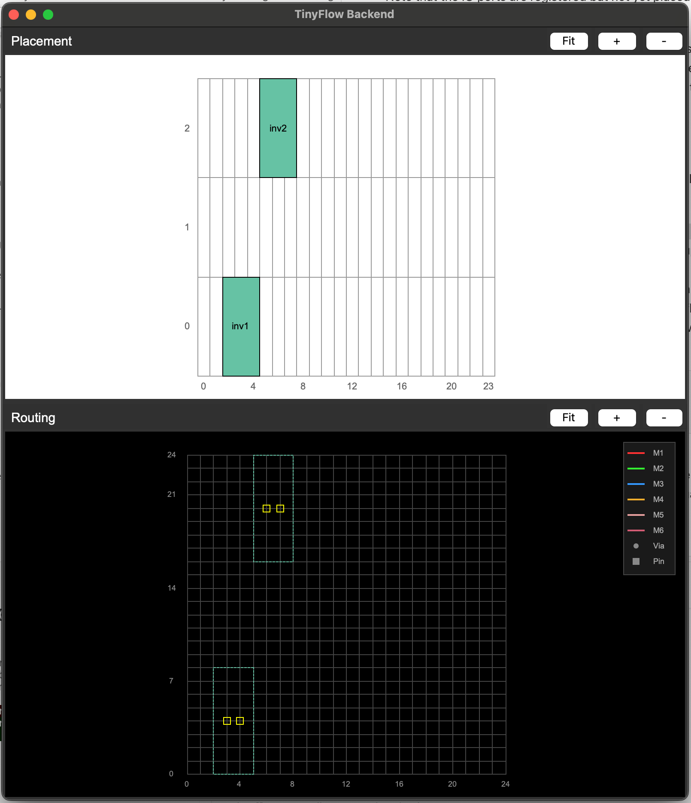
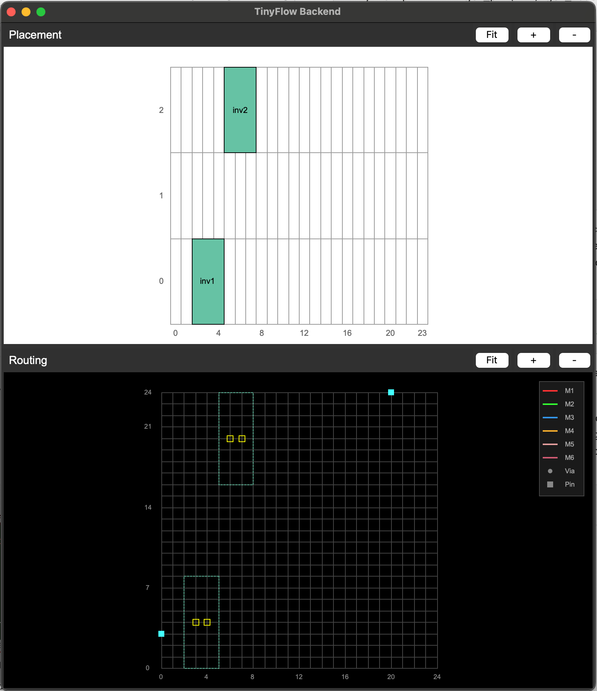
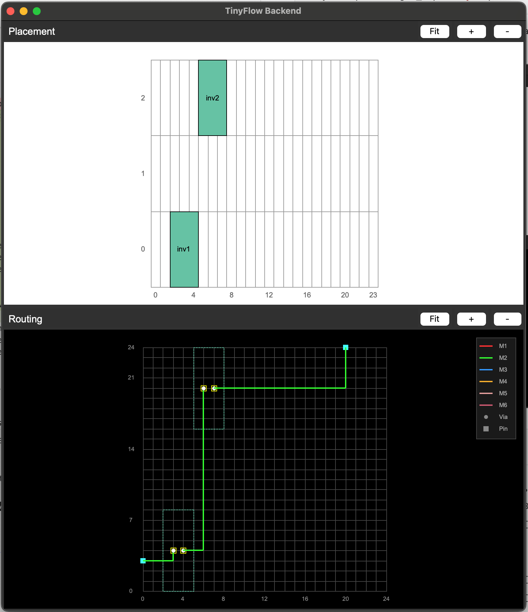
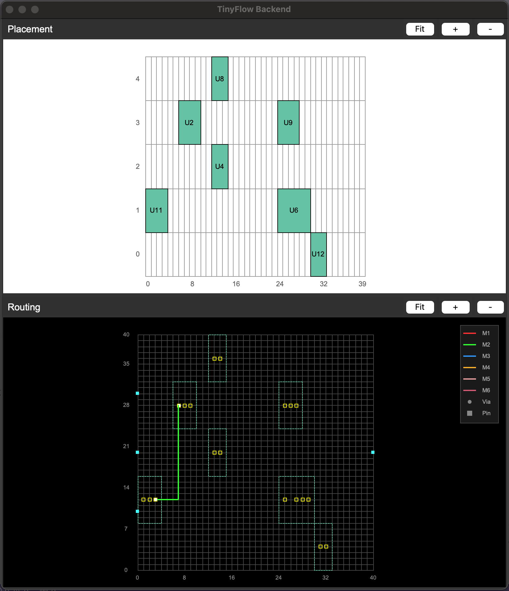

ECE 6745 Lab 4: TinyFlow Back End
In this lab, we will explore the TinyFlow back end which takes as input a gate-level netlist of standard cells and produces a placed and routed layout. The complete TinyFlow standard-cell and ASIC design flow is shown below with the back end highlighted in red.

The back end includes floorplanning, placement, routing, and filler cell insertion. In this lab, we will be implementing unoptimized versions of placement and routing. The key algorithms in the unoptimized back end flow are shown below.

1. Logging Into ecelinux
Follow the same process as previous labs. Find a free workstation and log into the workstation using your NetID and standard NetID password. Then complete the following steps.
- Start VS Code
- Install the Remote-SSH extension, Surfer, and Verilog extensions
- Use View > Command Palette to execute Remote-SSH: Connect Current Window to Host...
- Enter netid@ecelinux-XX.ece.cornell.edu where XX is an ecelinux server number
- Use View > Explorer to open your home directory on ecelinux
- Use View > Terminal to open a terminal on ecelinux
- Start MS Remote Desktop
Now use the following commands to clone the repo we will be using for today's lab.
% source setup-ece6745.sh
% source setup-gui.sh
% mkdir -p ${HOME}/ece6745
% cd ${HOME}/ece6745
% git clone git@github.com:cornell-ece6745/ece6745-lab4 lab4
% cd lab4
% tree
Your repo contains the following files.
.
├── README.md
├── asic
│ └── build-fa
│ ├── 00-verilator-rtlsim
│ ├── 01-iverilog-rtlsim
│ ├── 02-tinyflow-synth
│ ├── 03-iverilog-ffglsim
│ └── 04-tinyflow-pnr
├── rtl
│ ├── FullAdder_cout.v
│ └── FullAdder_cout-post-synth.v
├── stdcells
└── tinyflow
├── pnr
│ ├── StdCellBackEndView.py
│ ├── TinyBackEndDB.py
│ ├── TinyBackEndGUI.py
│ ├── add_filler.py
│ ├── floorplan.py
│ ├── multi_route_unopt.py
│ ├── place_unopt.py
│ └── single_route_unopt.py
├── tinyflow-synth
└── tinyflow-pnr
Our back end flow uses the back end and layout views from the sandard standard-cell library you developed in Project 1, Part A. You will also need your synthesis tool for the end-to-end flow. Copy these files into the lab4 directory.
% cd ${HOME}/ece6745/lab4
% cp -r ${HOME}/ece6745/project1-groupXX/stdcells/stdcells .
% cp -r ${HOME}/ece6745/project1-groupXX/tinyflow/synth tinyflow
where XX is your group number. We provide FullAdder_cout.v (the RTL)
and FullAdder_cout-post-synth.v (a pre-synthesized gate-level netlist)
in the rtl directory so you can test the back end flow directly.
To make it easier to cut-and-paste commands from this handout onto the
command line, you can tell Bash to ignore the % character using the
following command:
Now you can cut-and-paste a sequence of commands from this tutorial
document and Bash will not get confused by the % character which begins
each line.
2. Data Structure: Back End Database
As discussed in lecture, the back end takes a gate-level netlist and produces a physical layout. The key data structure is the back end database which manages cells (standard cell instances), IO ports (block boundary pins), nets (connections between pins), a 2D site grid of sites, and a 3D routing grid of nodes. The PnR algorithms -- floorplanning, placement, and routing -- read and modify this database. We provide students the database, and students are responsible for writing the algorithms. Similar to the front end, we have a REPL for interactive exploration of the back end database and algorithms.
In this section, we will manually build a small design from scratch in the REPL to understand how these data structures work together. We will add cells, create nets, set up a floorplan, place cells, and route nets by hand before moving on to automated algorithms.
To get started, create a build directory and start the TinyFlow PnR REPL.
% mkdir -p ${HOME}/ece6745/lab4/tinyflow/build
% cd ${HOME}/ece6745/lab4/tinyflow/build
% ../tinyflow-pnr
2.1. Database, Floorplan, and the Grid
Before we can place cells or route wires, we need to set up the block's
physical foundation: the site grid and the routing grid. The
site grid is a 2D array of sites where cells can be placed. The
routing grid is a 3D array of nodes where wires can be routed across
multiple metal layers. Both are created when we call floorplan on the
database.
The figure below shows a top-down view of these two grids. Given the block's overall dimensions (left), the floorplan divides the area into a 2D grid of sites (center). Each site is one standard-cell slot. On top of that, a finer routing grid (right) provides nodes at every track pitch where wires and vias can be placed. The routing grid has many more rows than the site grid because sites are much taller than the track pitch.

The routing grid is actually 3D. Each node has coordinates (i, j, k)
where i and j identify a position on the block and k selects the
metal layer. The 3D view below shows how the routing grid stacks on top
of the site grid, extending across multiple metal layers (M1 to M6) with
vertical connections (vias) between layers.

Let's try this in TinyFlow. We first create a back end library view and
an empty database, then call floorplan to set up a small block with 3
rows and 24 sites per row.
tinyflow-pnr> view = StdCellBackEndView(be='../../stdcells/stdcells-be.yml', gds='../../stdcells/stdcells.gds')
tinyflow-pnr> db = TinyBackEndDB(view)
tinyflow-pnr> db.enable_gui()
tinyflow-pnr> db.floorplan(3, 24)
StdCellBackEndView is the back end counterpart to the front end view
from Lab 3. It provides the physical information needed for place and
route: site dimensions, cell layouts (pin locations, cell widths), and
metal layer definitions.
TinyBackEndDB is the central database for the back end. It stores all
cells, nets, pins, IO ports, and manages both the site grid and
routing grid. All PnR algorithms read and modify this database.
db.floorplan(num_rows, num_sites_per_row) initializes the block's
physical grid. It creates a 2D array of sites (rows x columns)
where standard cells will be placed, and a 3D routing grid of nodes
across all metal layers where wires will be routed. Nothing can be placed
or routed until this is called. You should see the GUI show two panels:
the top panel is the site pane showing the grid in sites, and the
bottom panel is the routing pane showing a top-down view of the 3D
routing grid.

Let's explore what db.floorplan created. First, check the dimensions
of the site grid and the routing grid.
tinyflow-pnr> db.get_num_rows()
tinyflow-pnr> db.get_num_cols()
tinyflow-pnr> db.get_grid_size_i()
tinyflow-pnr> db.get_grid_size_j()
Expected output
The site grid has num_rows rows and num_cols sites per row --
these are the coordinates you use when placing cells. The routing grid is
finer-grained: grid_size_i tracks in the vertical direction and
grid_size_j tracks in the horizontal direction, across multiple metal
layers.
Each placement site is represented by a Site object. A site is the smallest unit of space where a cell can be placed, the same size as a filler cell. Each rectangular box in the placement panel GUI corresponds to one site. Let's inspect a site to see what information it tracks:
Expected output
The site at (0, 0) shows its coordinates and whether it is occupied.
Since we haven't placed any cells yet, occupied_by is None. Once we
place cells in Section 2.3, we will see this change.
Each routing grid point is represented by a Node object, addressed
by (i, j, k) where i is the row track, j is the column track, and
k is the metal layer (1=M1, 2=M2, etc.). In the routing panel of the
GUI, nodes are the intersections of the grid lines. Each node tracks what
occupies it: a net's wire, a cell pin, or an IO port. Let's inspect a
node to see what information it tracks:
Expected output
The node at (0, 0, 1) is on M1 at row track 0, column track 0. Since
we haven't routed any wires yet, the occupancy is None. Once we route
nets in Section 2.3, we will see this change. get_occupancy will be
very useful later when implementing the routing algorithms to check
whether a node is available before routing through it.
2.2. Cells, IO Ports, and Nets
Now that we have a floorplan, let's add cells, register IO ports, and
create nets to connect them. We will build a simple two-inverter chain:
input a drives inv1, whose output connects to inv2, whose output
drives output y.
A Cell represents an instance of a standard cell from the library (e.g., INVX1, NAND2X1). When we add a cell to the database, it automatically creates Pin objects based on the cell's layout definition. Let's add two inverters:
tinyflow-pnr> db.add_cell('inv1', 'INVX1')
tinyflow-pnr> db.add_cell('inv2', 'INVX1')
tinyflow-pnr> db.get_cells()
Expected output
Each cell has pins that we can inspect. Pins are not yet placed on the grid since we haven't placed the cells yet. Note that the GUI only shows placed cells, so you won't see them in the GUI here:
tinyflow-pnr> inv1 = db.get_cell('inv1')
tinyflow-pnr> inv1.get_pins()
tinyflow-pnr> inv1.get_pin('A')
tinyflow-pnr> inv1.get_pin('A').get_node()
Expected output
An IO Port represents an external signal at the block boundary. IO
ports are registered with add_ioport -- at this point, they are
unplaced, we just declare that they exist. They will be placed on the
block boundary later. Let's register that our design has an input a
and an output y:
tinyflow-pnr> db.add_ioport('a', 'input')
tinyflow-pnr> db.add_ioport('y', 'output')
tinyflow-pnr> db.get_ioports()
Expected output
add_ioport creates an IO port. It takes a direction to indicate
whether it is an input or output.
Now let's connect everything with Nets. A net represents a logical
connection between pins. For our inverter chain, we need three nets: a
connects the input IO port to inv1, w connects inv1's output to
inv2's input, and y connects inv2's output to the output IO port.
Since IO ports are pins, we include them directly in the pin list.
tinyflow-pnr> inv2 = db.get_cell('inv2')
tinyflow-pnr> db.add_net('a', [db.get_ioport('a'), inv1.get_pin('A')])
tinyflow-pnr> db.add_net('w', [inv1.get_pin('Y'), inv2.get_pin('A')])
tinyflow-pnr> db.add_net('y', [inv2.get_pin('Y'), db.get_ioport('y')])
tinyflow-pnr> db.get_nets()
Expected output
tinyflow-pnr> inv2 = db.get_cell('inv2')
tinyflow-pnr> db.add_net('a', [db.get_ioport('a'), inv1.get_pin('A')])
tinyflow-pnr> db.add_net('w', [inv1.get_pin('Y'), inv2.get_pin('A')])
tinyflow-pnr> db.add_net('y', [inv2.get_pin('Y'), db.get_ioport('y')])
tinyflow-pnr> db.get_nets()
(<Net a, 2 pins>, <Net w, 2 pins>, <Net y, 2 pins>)
Nets a and y each have two pins: a cell pin and an IO port. Net w
is an internal wire between the two inverters with no IO port. Let's
verify:
tinyflow-pnr> db.get_net('a').pins
tinyflow-pnr> db.get_net('w').pins
tinyflow-pnr> db.get_net('y').pins
Expected output
Note that the IO ports are registered but not yet placed. We will place them on the block boundary later in Section 2.3.
With cells, IO ports, and nets defined, we have fully described the gate-level netlist -- what components exist and how they should be connected. The next step is to physically place and route them on the block.
2.3. Manually Placing and Routing
With cells, IO ports, and nets created, let's physically place the cells and IO ports on the grid and manually route a net.
Let's start with placing a cell. cell.set_place(row, col) places a cell with its origin at site
(row, col). The cell occupies one or more sites to the right depending
on its width. If any of those sites are already occupied by another cell,
the database raises an error. Cells in even rows are oriented normally; cells in odd rows are flipped
vertically so that adjacent rows share VDD and VSS power rails. Go
ahead and place inv1 at (0, 2) and inv2 at (2, 5):
You should see something like this:

The cells should now appear in the placement panel as green boxes labeled with the cell name. In the routing panel, each placed cell shows as a teal dotted shadow box with its pin locations marked as yellow squares. When a cell is placed, its pins get assigned grid coordinates on metal layer 1 (M1):
tinyflow-pnr> inv1.is_placed()
tinyflow-pnr> inv1.get_pin('Y').get_node()
tinyflow-pnr> inv2.get_pin('A').get_node()
Expected output
Let's then place the IO ports on the block boundary. Recall that we
registered them earlier but they were unplaced. We use ioport.place(i,
j) to assign them to a grid location on the boundary. IO ports are
placed on M2:
You should see the Routing panel include the IO ports as light blue square boxes.

Let's run db.check_design() to verify our placement:
Expected output
Placement passes, but all three nets are unrouted. Now that our cells and IO ports are placed, we want to connect their pins with wires.
A wire is represented as a Line, a straight segment between two 3D
grid points (i, j, k). Exactly one coordinate changes: i or j for
a wire on the same metal layer, or k for a via between layers.
Cell pins live on M1 (k=1), but routing happens on M2 and above. In this example we will route on M2. To connect two cell pins, we need to:
- Go up from M1 to M2 at the source pin (via)
- Route on M2 to reach the destination (wire segments)
- Come back down from M2 to M1 at the destination pin (via)
Since our two inverters are at different rows, the M2 route requires two
segments forming an L-shape. Let's route net w which connects inv1.Y
to inv2.A. We will add each line segment one at a time so you can see
the route build up in the GUI:
tinyflow-pnr> src_x, src_y, _ = inv1.get_pin('Y').get_node()
tinyflow-pnr> dst_x, dst_y, _ = inv2.get_pin('A').get_node()
tinyflow-pnr> net_w = db.get_net('w')
tinyflow-pnr> net_w.add_route_segments([Line((src_x, src_y, 1), (src_x, src_y, 2))])
tinyflow-pnr> net_w.add_route_segments([Line((src_x, src_y, 2), (src_x, dst_y, 2))])
tinyflow-pnr> net_w.add_route_segments([Line((src_x, dst_y, 2), (dst_x, dst_y, 2))])
tinyflow-pnr> net_w.add_route_segments([Line((dst_x, dst_y, 2), (dst_x, dst_y, 1))])
The route should now appear in the routing panel of the GUI. You can verify the node occupancy along the route:
Expected output
At this point, we have only routed net w. Let's run db.check_design()
to see if there are any issues:
Expected output
The checker reports that nets a and y are not yet routed.
Now let's route the IO ports to their cells. Recall that IO ports are
on M2 while cell pins are on M1. For net a, the IO port is already on
M2, so we route on M2 to reach inv1.A and via down. For net y, we
via up from inv2.Y to M2, route on M2 to reach the IO port:
tinyflow-pnr> io_a = db.get_ioport('a').get_node()
tinyflow-pnr> pin_a = inv1.get_pin('A').get_node()
tinyflow-pnr> net_a = db.get_net('a')
tinyflow-pnr> net_a.add_route_segments([Line((io_a[0], io_a[1], 2), (io_a[0], pin_a[1], 2))])
tinyflow-pnr> net_a.add_route_segments([Line((io_a[0], pin_a[1], 2), (pin_a[0], pin_a[1], 2))])
tinyflow-pnr> net_a.add_route_segments([Line((pin_a[0], pin_a[1], 2), (pin_a[0], pin_a[1], 1))])
tinyflow-pnr> io_y = db.get_ioport('y').get_node()
tinyflow-pnr> pin_y = inv2.get_pin('Y').get_node()
tinyflow-pnr> net_y = db.get_net('y')
tinyflow-pnr> net_y.add_route_segments([Line((pin_y[0], pin_y[1], 1), (pin_y[0], pin_y[1], 2))])
tinyflow-pnr> net_y.add_route_segments([Line((pin_y[0], pin_y[1], 2), (pin_y[0], io_y[1], 2))])
tinyflow-pnr> net_y.add_route_segments([Line((pin_y[0], io_y[1], 2), (io_y[0], io_y[1], 2))])

Now run db.check_design() again, your design should pass both placement and routing check now.
2.4. Reading Verilog
In practice, we don't manually add cells, IO ports, and nets. The front
end generates a gate-level Verilog netlist, and db.read_verilog reads
it to create all cells, IO ports, and nets automatically. We have
provided a synthesized FullAdder_cout design from lecture. Let's load
it and verify what was created:
tinyflow-pnr> view = StdCellBackEndView(be='../../stdcells/stdcells-be.yml', gds='../../stdcells/stdcells.gds')
tinyflow-pnr> db = TinyBackEndDB(view)
tinyflow-pnr> db.read_verilog('../../rtl/FullAdder_cout-post-synth.v')
tinyflow-pnr> db.get_cells()
tinyflow-pnr> db.get_ioports()
tinyflow-pnr> db.get_nets()
3. Algorithm: Floorplan
In Section 2, we called db.floorplan directly with the number of rows
and sites per row. In practice, the floorplan algorithm computes the grid
dimensions and places IO ports on the block boundary.
There are two approaches. floorplan_fixed takes explicit block width and
height in micrometers along with IO port locations, and converts those
physical dimensions into grid coordinates. floorplan_auto computes the
block dimensions automatically from the total cell area and a target
utilization. In this lab, we will implement floorplan_fixed.
3.1. Fixed Floorplan
floorplan_fixed takes the block width and height in micrometers, along
with a dictionary of IO port locations also in micrometers. It converts
all physical dimensions into grid coordinates using the back end library
view.
The algorithm works as follows:
- Get the technology's lambda value in micrometers from
view.get_lambda_um()and the site dimensions in lambda fromview.get_site() - Convert the block width and height from micrometers to lambda by dividing by lambda_um
- Compute the number of rows and columns by dividing the lambda dimensions by the site height and site width
- Call
db.floorplan(num_rows, num_cols)to initialize the placement and routing grids - For each IO port, convert its (x_um, y_um) location from micrometers
to routing grid coordinates (i, j). You will need the metal1 track
pitch, which you can get with
view.get_layer('metal1').get_track_pitch(). Divide the lambda coordinate by the track pitch to get the grid index. Then callioport.place(i, j)to place each port on the grid
Function: floorplan_fixed(db, view, width_um, height_um, io_locs)
Args:
db-- TinyBackEndDB with cells and nets loadedview-- StdCellBackEndView with site dimensions and lambdawidth_um-- Block width in micrometersheight_um-- Block height in micrometersio_locs-- Dict mapping port names to (x_um, y_um) locations
Returns: None (modifies db in place)
Go ahead and implement floorplan_fixed in floorplan.py. Use
logging.info to print useful information such as the computed number of
rows and columns. Once you are done, you can test your implementation
using the FullAdder_cout design from lecture:
tinyflow-pnr> view = StdCellBackEndView(be='../../stdcells/stdcells-be.yml', gds='../../stdcells/stdcells.gds')
tinyflow-pnr> db = TinyBackEndDB(view)
tinyflow-pnr> db.enable_gui()
tinyflow-pnr> db.read_verilog('../../rtl/FullAdder_cout-post-synth.v')
tinyflow-pnr> io_locs = { 'a': (0.0, 7.2), 'b': (0.0, 14.4), 'cin': (0.0, 21.6), 'cout': (28.8, 14.4) }
tinyflow-pnr> floorplan_fixed(db, view, 28.8, 28.8, io_locs)
tinyflow-pnr> db.get_num_rows()
tinyflow-pnr> db.get_num_cols()
tinyflow-pnr> db.get_ioports()
Expected output
4. Algorithm: Unoptimized Placement
Placement assigns each cell to a location on the site grid. The
goal is to find positions for all cells such that no two cells overlap.
In an optimized flow, placement also minimizes wire length and improves
timing. In this lab, we will implement place_unopt, which randomly
assigns cells to grid positions without any optimization. In the
project, we will build on this random placement using simulated annealing
to iteratively improve cell positions for wire length.
4.1. Random placement
The random placement we implement in this lab is a naive version that simply places cells at random positions without any optimization. If we recall the standard cells we drew in Part A, cells can have different widths. A site is the minimum cell width, and the site grid is the fine-grained grid of all site positions. To ensure no overlap, we use a coarser grid which we will refer to as the placement grid. We divide the columns into slots that are each as wide as the widest cell. Since every slot is at least as wide as any cell, placing one cell per slot in the placement grid guarantees no overlap.
The algorithm works as follows:
- Find the maximum cell width across all cells
- Compute the number of placement columns by dividing the total columns by the max cell width
- Randomly assign each cell to a unique placement grid position, placing it at (row, placement_col * max_width)
Function: place_unopt(db, view, seed=0)
Args:
db-- TinyBackEndDB with floorplan initializedview-- StdCellBackEndView (unused, for consistency)seed-- Random seed
Returns: None (modifies db in place)
Go ahead and implement place_unopt in place_unopt.py. You can use
logging.info to print useful information such as the number of cells
placed or cell's placed location. You can pass in a different seed to
try a different random placement.
Once you are done, test your implementation in the REPL:
tinyflow-pnr> view = StdCellBackEndView(be='../../stdcells/stdcells-be.yml', gds='../../stdcells/stdcells.gds')
tinyflow-pnr> db = TinyBackEndDB(view)
tinyflow-pnr> db.enable_gui()
tinyflow-pnr> db.read_verilog('../../rtl/FullAdder_cout-post-synth.v')
tinyflow-pnr> io_locs = { 'a': (0.0, 7.2), 'b': (0.0, 14.4), 'cin': (0.0, 21.6), 'cout': (28.8, 14.4) }
tinyflow-pnr> floorplan_fixed(db, view, 28.8, 28.8, io_locs)
tinyflow-pnr> place_unopt(db, view, seed=42)
tinyflow-pnr> db.get_cells()[0].is_placed()
tinyflow-pnr> db.get_cells()[0].get_place()
You should see all cells placed on the grid in the GUI. Each cell appears as a labeled box in the placement panel, with pin locations shown as yellow squares in the routing panel.
5. Algorithm: Unoptimized Routing
Routing draws the metal wiring and vias that connect the pins of each net. In Section 2, we manually routed a net by creating Line segments for vias and wires. In this section, we will automate that process. In this lab, we will implement a naive router that connects pins using manhattan L-shaped routes. Similar to Lab 3, we will start by implementing small modular functions and build up towards a working multi-net router. In the project, we will replace this with an optimized router.
5.1. Check Lines
Before we can route a net, we need a way to check whether a proposed route is valid. When routing a net, we construct a route for that net. A route is a list of Lines, where each Line is a straight segment between two grid points with exactly one coordinate changing (a wire in the x or y direction on one layer, or a via in the z direction between layers). Together, the Lines in a route form the complete wiring for one net.
Each Line passes through a sequence of grid points. If any of those points is already occupied by another net's wire, we cannot use that route. For example, if two nets try to use the same node on M2, that would be a short circuit.
A Line provides get_points() which returns all grid points along the
segment. We can check each point using db.get_occupancy(i, j, k),
which returns the net occupying that node or None if it is available.
A point is a collision only if it is occupied by a different net. Points
occupied by the current net are allowed since a net can cross its own
wires.
The algorithm works as follows:
- For each Line in the list, get all grid points using
line.get_points() - For each point, check occupancy using
db.get_occupancy(i, j, k) - If occupied by a different net, return
False - If all points are clear (or occupied by the same net), return
True
Function: check_lines(db, net, lines)
Args:
db-- TinyBackEndDB for occupancy checksnet-- Current net (allowed to use its own nodes)lines-- List of Line segments to check
Returns: True if all lines are clear, False if any collision
Go ahead and implement check_lines in single_route_unopt.py.
To test, set up the design, then manually add a route to one net and check if the same lines collide with a different net:
tinyflow-pnr> view = StdCellBackEndView(be='../../stdcells/stdcells-be.yml', gds='../../stdcells/stdcells.gds')
tinyflow-pnr> db = TinyBackEndDB(view)
tinyflow-pnr> db.enable_gui()
tinyflow-pnr> db.read_verilog('../../rtl/FullAdder_cout-post-synth.v')
tinyflow-pnr> io_locs = { 'a': (0.0, 7.2), 'b': (0.0, 14.4), 'cin': (0.0, 21.6), 'cout': (28.8, 14.4) }
tinyflow-pnr> floorplan_fixed(db, view, 28.8, 28.8, io_locs)
tinyflow-pnr> place_unopt(db, view, seed=42)
tinyflow-pnr> net_a = db.get_net('a')
tinyflow-pnr> net_b = db.get_net('b')
tinyflow-pnr> lines = [Line((10, 0, 2), (10, 5, 2))]
tinyflow-pnr> net_a.add_route_segments(lines)
tinyflow-pnr> check_lines(db, net_b, lines)
tinyflow-pnr> check_lines(db, net_a, lines)
The first check should return False since the nodes are occupied by
net_a. The second check should return True since a net is allowed
to cross its own wires.
5.2. Manhattan Route on M2
Now we implement a simple routing function that only routes on the M2
layer. Given two pin locations on M1, manhattan_route_m2 connects them
with an L-shaped route on M2. Recall from Section 2 that a route is
made up of Line segments. To go from one pin to another, we need four
Lines: a via up from M1 to M2 at the source, a horizontal wire on M2,
a vertical wire on M2, and a via down from M2 to M1 at the destination.
The two wire segments form an L-shape (manhattan route) that meets at a
right angle.
The algorithm first tries one L-shape ordering, then the other:
- Try x-then-y: construct Lines for via up (M1 to M2), x-direction
wire, y-direction wire, via down (M2 to M1). Use
check_linesto test for collisions. If clear, commit withnet.add_route_segments(lines)and returnTrue. - Try y-then-x: construct Lines for via up, y-direction wire, x-direction wire, via down. Check and commit if clear.
- If both orderings collide, return
False.
Function: manhattan_route_m2(db, net, start, end)
Args:
db-- TinyBackEndDB for occupancy checksnet-- Net to add route tostart-- Starting (i, j, k) tuple on M1end-- Ending (i, j, k) tuple on M1
Returns: True if route found and committed, False if both orderings blocked
Go ahead and implement manhattan_route_m2 in single_route_unopt.py.
To test, pick a net and route between its first two pins:
tinyflow-pnr> view = StdCellBackEndView(be='../../stdcells/stdcells-be.yml', gds='../../stdcells/stdcells.gds')
tinyflow-pnr> db = TinyBackEndDB(view)
tinyflow-pnr> db.enable_gui()
tinyflow-pnr> db.read_verilog('../../rtl/FullAdder_cout-post-synth.v')
tinyflow-pnr> io_locs = { 'a': (0.0, 7.2), 'b': (0.0, 14.4), 'cin': (0.0, 21.6), 'cout': (28.8, 14.4) }
tinyflow-pnr> floorplan_fixed(db, view, 28.8, 28.8, io_locs)
tinyflow-pnr> place_unopt(db, view, seed=42)
# Try routing g's first two pins
tinyflow-pnr> net_g = db.get_net('g')
tinyflow-pnr> start = net_g.pins[0].get_node()
tinyflow-pnr> end = net_g.pins[1].get_node()
tinyflow-pnr> manhattan_route_m2(db, net_g, start, end)
tinyflow-pnr> net_g.get_route()
# Try routing _net_10's first two pins
tinyflow-pnr> net_n10 = db.get_net('_net_10')
tinyflow-pnr> start = net_n10.pins[0].get_node()
tinyflow-pnr> end = net_n10.pins[1].get_node()
tinyflow-pnr> manhattan_route_m2(db, net_n10, start, end)
The first route (g) should return True. In the GUI, the start and
end pins should now show a filled circle (the via) where there was
previously an empty square, and you should see the L-shaped wire
segments connecting them. The second route (_net_10) should return
False because its path crosses g's route on M2.

5.3. Manhattan Route (Multi-Layer)
Now we generalize manhattan_route_m2 to try multiple metal layers.
Instead of only routing on M2, manhattan_route tries each routing
layer from M6 down to M2. We try higher layers first with the hope
that routing on upper layers leaves the lower layers free for later
nets, reducing the chance of congestion.
The algorithm works as follows:
- For each layer from M6 down to M2:
- Try x-then-y: construct 4 Lines (via up, x-wire, y-wire, via down).
Use
check_linesto test. If clear, commit and returnTrue. - Try y-then-x: construct 4 Lines. Check and commit if clear.
- If all layers and orderings fail, return
False.
Function: manhattan_route(db, net, start, end)
Args:
db-- TinyBackEndDB for occupancy checksnet-- Net to add route tostart-- Starting (i, j, k) tupleend-- Ending (i, j, k) tuple
Returns: True if route found and committed, False if all options blocked
Go ahead and implement manhattan_route in single_route_unopt.py.
To test, try the same two nets from Section 5.2 but using
manhattan_route instead. Both should succeed since the multi-layer
version can route on different layers:
tinyflow-pnr> view = StdCellBackEndView(be='../../stdcells/stdcells-be.yml', gds='../../stdcells/stdcells.gds')
tinyflow-pnr> db = TinyBackEndDB(view)
tinyflow-pnr> db.enable_gui()
tinyflow-pnr> db.read_verilog('../../rtl/FullAdder_cout-post-synth.v')
tinyflow-pnr> io_locs = { 'a': (0.0, 7.2), 'b': (0.0, 14.4), 'cin': (0.0, 21.6), 'cout': (28.8, 14.4) }
tinyflow-pnr> floorplan_fixed(db, view, 28.8, 28.8, io_locs)
tinyflow-pnr> place_unopt(db, view, seed=42)
# Try routing g's first two pins
tinyflow-pnr> net_g = db.get_net('g')
tinyflow-pnr> start = net_g.pins[0].get_node()
tinyflow-pnr> end = net_g.pins[1].get_node()
tinyflow-pnr> manhattan_route(db, net_g, start, end)
# Try routing _net_10's first two pins
tinyflow-pnr> net_n10 = db.get_net('_net_10')
tinyflow-pnr> start = net_n10.pins[0].get_node()
tinyflow-pnr> end = net_n10.pins[1].get_node()
tinyflow-pnr> manhattan_route(db, net_n10, start, end)
Both should return True. The first net routes on the highest
available layer (M6), and the second net finds a different free layer
since they no longer compete for M2.
5.4. Single-Net Routing (single_route_unopt)
Now we put the pieces together to route a single net. A net can have
more than two pins (e.g., a fan-out net). single_route_unopt connects
all pins sequentially using manhattan_route. Note that if a pair
fails partway through, the previously routed segments are still
committed -- the net's route will be incomplete but the partial
segments remain on the grid.
The algorithm works as follows:
- Get the net by name and collect all pin locations
- For each consecutive pair of pins (pin 0→1, pin 1→2, etc.), call
manhattan_routeto connect them - If any pair fails, return
False - If all pairs succeed, mark the net as routed and return
True
Function: single_route_unopt(db, net_name)
Args:
db-- TinyBackEndDB with placed designnet_name-- Name of the net to route
Returns: True if routing succeeded, False otherwise
Go ahead and implement single_route_unopt in single_route_unopt.py.
To test, route a single net by name:
tinyflow-pnr> view = StdCellBackEndView(be='../../stdcells/stdcells-be.yml', gds='../../stdcells/stdcells.gds')
tinyflow-pnr> db = TinyBackEndDB(view)
tinyflow-pnr> db.enable_gui()
tinyflow-pnr> db.read_verilog('../../rtl/FullAdder_cout-post-synth.v')
tinyflow-pnr> io_locs = { 'a': (0.0, 7.2), 'b': (0.0, 14.4), 'cin': (0.0, 21.6), 'cout': (28.8, 14.4) }
tinyflow-pnr> floorplan_fixed(db, view, 28.8, 28.8, io_locs)
tinyflow-pnr> place_unopt(db, view, seed=42)
tinyflow-pnr> single_route_unopt(db, 'a')
tinyflow-pnr> db.get_net('a').get_route()
5.5. Multi-Net Routing (multi_route_unopt)
Finally, we route all nets in the design.
The algorithm works as follows:
- Get all nets from the database
- For each net with two or more pins, call
single_route_unopt - Track which nets failed to route
- Return
Trueif all nets routed,Falseotherwise
Function: multi_route_unopt(db, view)
Args:
db-- TinyBackEndDB with placed designview-- StdCellBackEndView (unused, for consistency)
Returns: True if all nets routed, False otherwise
Go ahead and implement multi_route_unopt in multi_route_unopt.py.
To test, route all nets in the design:
tinyflow-pnr> view = StdCellBackEndView(be='../../stdcells/stdcells-be.yml', gds='../../stdcells/stdcells.gds')
tinyflow-pnr> db = TinyBackEndDB(view)
tinyflow-pnr> db.enable_gui()
tinyflow-pnr> db.read_verilog('../../rtl/FullAdder_cout-post-synth.v')
tinyflow-pnr> io_locs = { 'a': (0.0, 7.2), 'b': (0.0, 14.4), 'cin': (0.0, 21.6), 'cout': (28.8, 14.4) }
tinyflow-pnr> floorplan_fixed(db, view, 28.8, 28.8, io_locs)
tinyflow-pnr> place_unopt(db, view, seed=42)
tinyflow-pnr> multi_route_unopt(db, view)
With your implementation, it is possible that not all nets route successfully. This is expected -- with a random unoptimized placement, some nets may fail to route due to congestion. Try a different seed to see how placement affects routability.
6. Algorithm: Add Filler
After placement and routing, some sites on the grid may still be empty.
In a real chip, every site must be filled to satisfy manufacturing
design rules and maintain continuous power rails. add_filler walks
through every site in the site grid and marks any unoccupied site
as a filler cell.
The algorithm works as follows:
- Get the site grid using
db.get_core(), which returns a 2D array of sites - Iterate through every site in the grid
- For each site, check if it is unoccupied using
site._get_occupancy() - If unoccupied, mark it as filler using
site.add_filler()
Function: add_filler(db, view)
Args:
db-- TinyBackEndDB with placed and routed designview-- StdCellBackEndView (unused, for consistency)
Returns: None (modifies db in place)
Go ahead and implement add_filler in add_filler.py. To test:
tinyflow-pnr> view = StdCellBackEndView(be='../../stdcells/stdcells-be.yml', gds='../../stdcells/stdcells.gds')
tinyflow-pnr> db = TinyBackEndDB(view)
tinyflow-pnr> db.enable_gui()
tinyflow-pnr> db.read_verilog('../../rtl/FullAdder_cout-post-synth.v')
tinyflow-pnr> io_locs = { 'a': (0.0, 7.2), 'b': (0.0, 14.4), 'cin': (0.0, 21.6), 'cout': (28.8, 14.4) }
tinyflow-pnr> floorplan_fixed(db, view, 28.8, 28.8, io_locs)
tinyflow-pnr> place_unopt(db, view, seed=42)
tinyflow-pnr> multi_route_unopt(db, view)
tinyflow-pnr> add_filler(db, view)
You should see the empty sites in the GUI filled in after running
add_filler.
7. Algorithm: Layout Writer
The final step is to write out the layout as a GDS file. This is
provided for you -- simply call db.write_gds with the desired output
filename:
tinyflow-pnr> view = StdCellBackEndView(be='../../stdcells/stdcells-be.yml', gds='../../stdcells/stdcells.gds')
tinyflow-pnr> db = TinyBackEndDB(view)
tinyflow-pnr> db.read_verilog('../../rtl/FullAdder_cout-post-synth.v')
tinyflow-pnr> io_locs = { 'a': (0.0, 7.2), 'b': (0.0, 14.4), 'cin': (0.0, 21.6), 'cout': (28.8, 14.4) }
tinyflow-pnr> floorplan_fixed(db, view, 28.8, 28.8, io_locs)
tinyflow-pnr> place_unopt(db, view, seed=42)
tinyflow-pnr> multi_route_unopt(db, view)
tinyflow-pnr> add_filler(db, view)
tinyflow-pnr> db.check_design()
tinyflow-pnr> db.report_summary()
tinyflow-pnr> db.write_gds('FA_cout.gds')
This merges your placed and routed design with the standard cell
layouts and writes the combined result to a GDS file. Open
FA_cout.gds in KLayout to inspect the final physical layout.
8. TinyFlow Front and Back End
The complete TinyFlow includes both the front-end and back-end. The front-end flow consists of four steps: two-state simulation, four-state simulation, synthesis, and fast-functional gate-level simulation. The back-end flow consists of three steps: place-and-route, design rule checking, and layout-vs-schematic. In this final part, we push the full adder design through all steps of the fron-end flow and the place-and-route step of the back-end flow to illustrate going from Verilog RTL to a gate-level netlist to layout. We first manually run each step before showing how we can automate running the flow.
8.1. Tiny Front-End Manual Flow
We need to first run the front-end flow as in the previous lab and
project 1B to generate the gate-level netlist. We provide the Verilog RTL
in rtl/FullAdder.v and a basic testbench in
rtl/test/FullAdder-test.v. These are the same as in the previous lab.
Trun the two-state simulation with Verilator.
% cd $HOME/ece6745/lab4/asic/playground/01-verilator-rtlsim
% verilator --top Top --timing --binary -o FullAdder-test \
../../../rtl/FullAdder.v \
../../../rtl/test/FullAdder-test.v
% ./obj_dir/FullAdder-test
Now run four-state simulation with Icarus Verilog.
% cd $HOME/ece6745/lab4/asic/playground/02-iverilog-rtlsim
% iverilog -g2012 -o FullAdder-test \
../../../rtl/FullAdder.v \
../../../rtl/test/FullAdder-test.v
% ./FullAdder-test
Create a run.py script for synthesis.
Populate the script with the commands to perform optimized technology mapping and static timing analysis using your work Project 1B.
# Load the standard-cell front-end view and create front-end database
view = StdCellFrontEndView.parse_lib("../../../stdcells/stdcells-fe.yml")
db = TinyFrontEndDB(view)
# Read Verilog file into the database
db.read_verilog("../../../rtl/FullAdder.v")
# Optimized technology mapping
techmap(db, view)
# Static timing analysis with output load of 10fF
output_load = 10
sta(db, view, output_load)
# Check design for issues
db.check_design()
# Output reports
db.report_area()
db.report_timing()
db.report_summary()
# Write front-end database to a Verilog gate-level netlist
db.write_verilog("post-synth.v")
Now go ahead and run synthesis.
% cd $HOME/ece6745/lab4/asic/playground/03-tinyflow-synth
% ../../../tinyflow/tinyflow-synth -f run.py
Finally run fast-functional gate-level simulation to ensure the gate-level netlist is correct.
% cd $HOME/ece6745/lab4/asic/playground/04-iverilog-ffglsim
% iverilog -g2012 -o FullAdder-test \
../../../stdcells/stdcells.v ../03-tinyflow-synth/post-synth.v \
../../../rtl/test/FullAdder-test.v
% ./FullAdder-test
8.2. Tiny Back-End Manual Flow
Let's first run the back-end flow interactively, and then we will create
a corresponding run.py script. Start the place-and-route REPL.
Now load the standard view, create the tiny back-end database, and start the GUI.
tinyflow-pnr> view = StdCellBackEndView(
be = '../../../stdcells/stdcells-be.yml',
gds = '../../../stdcells/stdcells.gds',
)
tinyflow-pnr> db = TinyBackEndDB(view)
tinyflow-pnr> db.enable_gui()
Read the gate-level netlist Verilog file into the database.
Create a fixed floorplan.
tinyflow-pnr> io_locs = {
'a' : ( 0.0, 21.6),
'b' : ( 0.0, 14.4),
'cin' : ( 0.0, 7.2),
'cout' : (29.52, 21.6),
'sum' : (29.52, 7.2),
}
tinyflow-pnr> floorplan_fixed(db, view, 30.0, 30.0, io_locs)
Place and route the design and insert filler cells.
tinyflow-pnr> place_unopt(db, view)
tinyflow-pnr> multi_route_unopt(db, view)
tinyflow-pnr> add_filler(db, view)
Check the design for issues and output a summary report.
Note that the unoptimized routing algorithm is unlikely to be able to succesfully route all of the nets. This means we could not fabricate this design, but it is ok for illustrating the process during the lab. The optimized place and route algorithms you implement for Project 1C must be able to successfully route all nets in order to be able to contribute your block to the tinyflow tapeout.
Write the tiny back-end database to a GDS layout file and exit the REPL.
You can now view the final layout using Klayout.
Choose Display > Top Level Only to hide the internals of each standard cell and show just the placement and routing of the standard cells. Try hiding and showing different metal layers to better visualize the routing. Spend some time appreciating all your hard work!

Create a run.py script to make it easier to run place-and-route.
Populate the script with the above commands. Note that we do not enable
the GUI when using a run.py script.
view = StdCellBackEndView(
be = '../../../stdcells/stdcells-be.yml',
gds = '../../../stdcells/stdcells.gds',
)
db = TinyBackEndDB(view)
db.read_verilog('../03-tinyflow-synth/post-synth.v')
io_locs = {
'a' : ( 0.0, 21.6),
'b' : ( 0.0, 14.4),
'cin' : ( 0.0, 7.2),
'cout' : (29.52, 21.6),
'sum' : (29.52, 7.2),
}
floorplan_fixed(db, view, 30.0, 30.0, io_locs)
place_unopt(db, view)
multi_route_unopt(db, view)
add_filler(db, view)
db.check_design()
db.report_summary()
db.write_gds('post-pnr.gds')
Now rerun place-and-route using this run.py script.
8.3. Tiny Automated Flow
In the previous sections, we manually commands entering commands for each
tool to take a design from RTL to layout. Using run.py scripts can
help, and we could even crate run Bash scripts to further automate the
flow. However, truly agile hardware design demands more sophisticated
automation to simplify rapidly exploring the design space of one or more
designs. In this section, we will introduce a tool called pyhflow which
takes as input step templates and a design YAML and generates
appropriate flow scripts.
pyflow is based on the idea of step templates which are located in the asic/steps directory.
The directory layout should look as follows.
.
├── 01-verilator-rtlsim
│ └── run
├── 02-iverilog-rtlsim
│ └── run
├── 03-tinyflow-synth
│ ├── run
│ └── run.py
├── 04-iverilog-ffglsim
│ └── run
└── 05-tinyflow-pnr
├── run
└── run.py
Each step is a directory with a run script and possibly other scripts.
The key difference from the run.py and run scripts we used
previously, is that these scripts are templated using the Jinja2
templating system:
Open the run.py script in the 03-tinyflow-synth step template.
Notice how the run.py script is templated based on the design name.
The {{ }} directive is the standard syntax for template variable
substitution using Jinja2. The pyhflow program takes as input a design
YAML file which specifies how to fill in these template variables. Take a
look at the provided design YAML for the full ader.
The contents should look as follows.
steps:
- 01-verilator-rtlsim
- 02-iverilog-rtlsim
- 03-tinyflow-synth
- 04-iverilog-ffglsim
- 05-tinyflow-pnr
top_dir : ../../..
design_name : FullAdder
test : FullAdder-test
block_width : 30.0
block_height : 30.0
io_locs: |
'a' : ( 0.0, 21.6),
'b' : ( 0.0, 14.4),
'cin' : ( 0.0, 7.2),
'cout' : (29.52, 21.6),
'sum' : (29.52, 7.2),
This design YAML file specifies the generated flow should use five steps and also includes the design name, test name, and floorplan information. All pyhflow does is use the YAML file to figure out what to substitute into the templated steps and then copy the run scripts into the current working directory. You can also override parameters on pyhflow command line.
Let's now use pyhflow to easily automate the entire process of pushing a full adder through the tiny flow.
% cd $HOME/ece6745/lab4/asic
% mkdir -p build-fa
% cd build-fa
% pyhflow ../designs/fa.yml
% ./01-verilator-rtlsim/run
% ./02-iverilog-rtlsim/run
% ./03-tinyflow-synth/run
% ./04-iverilog-ffglsim/run
% ./05-tinyflow-pnr/run
pyhflow also creates a run-flow script which will run all the steps
further simplifying the process.